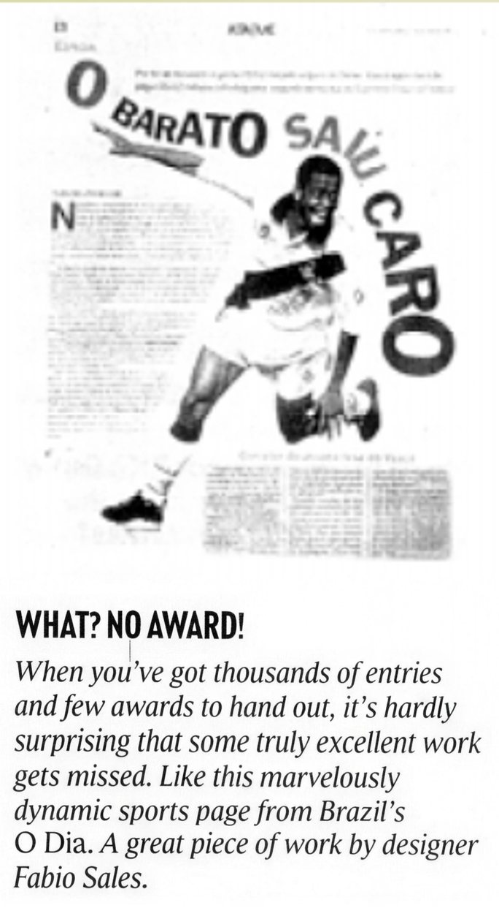
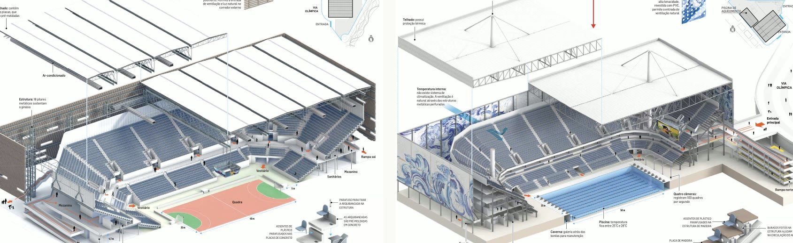

Archive
A broader selection from three decades of visual journalism, information design, art direction, storytelling, and experimental digital work.
The selected work on the home page is intentionally focused. This archive preserves the wider body of craft behind it.
Across newspapers, visual narratives, and digital experiments, these projects trace an evolving practice: finding the right form for each story, making complex subjects accessible, and giving readers a reason to look closer.

Malofiej distinctions
Five distinctions at Malofiej, the international information-design awards often described as the “Oscars of Infographics”.
Paladar
A fresh editorial perspective
I helped create Paladar, shaping its graphic and editorial concept as Estadão sought to modernize its portfolio of newspaper supplements. The project brought food journalism into a new visual and editorial space within the paper.
Favela Amazônia
Portrait of a New Forest
Winner of the Inter American Press Association (SIP) Award. A visual investigation into urbanization in the Amazon rainforest, balancing atmosphere, evidence, and complexity without sensationalism.
View on estadao.com.br
From evidence to understanding
The reconstruction was not illustration added after the reporting. It turned fragments, measurements, and scientific inference into something readers could understand.
Tapuiassauro
Malofiej Gold Medal
A visual reconstruction of a newly discovered Brazilian titanosaur, translating scientific evidence into an accessible visual narrative. The interactive version was built in Flash and no longer runs; this is the printed spread.
Studied in an information-design paper (CIDI, 2015)
World Cup 2010 visual timeline
A five-page visual chronology of the 2010 World Cup that assembled into a 1.5-meter-wide panel. Finalist for the Esso Award.
Santos-Dumont
Rediscovering the Inventor
An editorial special exploring Santos-Dumont through newly revealed documents, personal objects, and the evolution of his inventions. Visual storytelling connects the inventor’s public image with the experiments and traces he left behind.
Rota +Segura — Safer Route
Data visualization turned into utility: an interactive map helping drivers identify safer routes in São Paulo using crime data filtered by time, vehicle type, and location.
The Semantics of Power
Visual analysis of Brazilian presidential inaugural speeches after redemocratization, using vocabulary size and keyword frequency to reveal political shifts.
Caro Leitor & Supercoluna
A mobile-first daily briefing for political coverage, analysis, and opinion, designed for rapid scanning with links guiding readers through the day's essential stories.
Estadão Podcasts
One Family, Many Voices
A visual identity system for a growing family of podcasts. Shared rules for brand placement, typography, portraits, and color create recognition across listening platforms while giving each show room for its own personality.
News, opinion, and columnists share the institutional blue; Eldorado programs form a related family; specialist shows use a broader visual range. Consistency helps listeners recognize the publisher without making every cover look the same.
Economia Verde
A motion explainer on green hydrogen and Brazil's potential role in the transition to a low-carbon economy, part of a broader visual series on the green economy.
The Drummer's Movement
Complete art direction and layout for André Polvo's instructional methodology, translating rhythm and musical concepts into graphic notation and a coherent learning system.
More from the Archive
A wider selection of newspaper pages, visual stories, and editorial experiments — the craft behind the featured projects, collected across publications and decades.